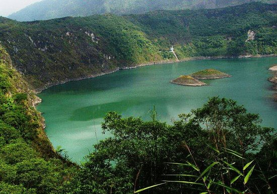

Sejarah

Sejarah berdirinya Kota Tasikmalaya sebagai daerah otonomi tidak terlepas dari sejarah berdirinya Kabupaten Tasikmalaya sebagai daerah kabupaten induknya. Sebelumnya, kota ini merupakan ibu kota dari Kabupaten Tasikmalaya,
kemudian meningkat statusnya menjadi Kota Administratif tahun 1976, pada waktu A. Bunyamin menjabat sebagai Bupati Tasikmalaya, dan kemudian menjadi pemerintahan kota yang mandiri pada masa Pemerintahan Kabupaten Tasikmalaya
dipimpin oleh bupatinya saat itu H. Suljana W.H. ...
Lebih Banyak
Geografis

Kondisi Geografis Daerah Berdasarkan UU No. 10 tahun 2001 tentang Pembentukan Kota Tasikmalaya, pada tanggal 17 Oktober 2001, Menteri Dalam Negeri Hari Sabarno atas nama Presiden RI meresmikan pembentukan Pemerintah Kota
Tasikmalaya dengan menandatangani Prasasti yang sekarang diletakkan di Balekota Jalan Letnan Harun No. 1 Kota Tasikmalaya.Sebagaimana tertuang dalam UU No. 10 tahun 2001 Pemerintah Kota Tasikmalaya pada awal terbentuknya
mempunyai 8 wilayah Kecamatan dengan 15 Kelurahan di 3 wilayah Kecamatan eks Kotif dan 54 Desa di 5 wilayah Kecamatan,
Lebih Banyak
Wisata
1. Situ Gede

Situ Gede menawarkan keindahan pemandangan danau yang membentang luas. Selain itu, melihat sekeliling kawasannya, terlihat ada pohon-pohon yang masih rimbun. Pepohonan tersebut yang membuat udara di sekitarnya tidak terasa
panas. Hal ini yang membuat daya tarik tersendiri bagi pengunjung untuk datang. Wisatawan akan merasakan kesejukan jika berkunjung ke Situ Gede. Kamu bisa menikmati duduk-duduk santai di gazebo yang disediakan, atau menikmati
santapan kuliner khas Tasikmalaya. Ada menu andalan di tempat ini yang bisa kamu coba yaitu olahan ikan segar. Selain itu ditambah dengan minuman kelapa muda yang menyegarkan.
Lebih Banyak